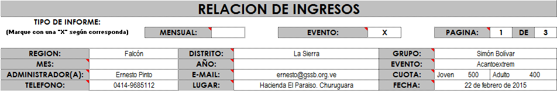
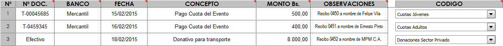

Ingresos Eventos
Tal como mencionamos en la sección de Políticas del área de Administración, la Constitución y leyes de cualquier país del mundo nos exigen llevar nuestra contabilidad al día de una forma clara y precisa, y para esto es necesario que todos los niveles de la estructura reporten en un lapso no mayor a 30 días, después de realizado un Evento, su relación de ingresos y egresos.
Para eso la Dirección Nacional de Administración, ha dispuesto una serie de formatos, los cuales están contemplados en este sistema. Estos reportes deben ser entregados al supervisor inmediato.
Por esto es muy recomendable que todos los archivos, estén guardados en espacios compartidos a través de la Internet, para que de esta forma en nivel supervisor pueda hacer seguimiento y apoyar en caso necesario.
Esta condición se debe a que la Asociación de Scouts de Venezuela posee una sola personalidad jurídica con domicilio legal en la ciudad de Caracas según reza en el registro mercantil.
Estos formatos fueron diseñados de una forma muy simple y con los requisitos mínimos para poder contabilizarlos, pueden ser utilizados por cualquier nivel de la estructura y no deben ser modificados.
Paso 1
Lo primero que debemos hacer es entrar en la carpeta de Dropbox de nuestro Grupo, Distrito o Región, allí donde mismo Trabajamos con el TURCO, y hacer doble clic sobre la carpeta Sistema Administrativo
Luego esta se abrirá y nos permitirá ver todos los archivos del mismo. Allí debemos hacer doble clic sobre la carpeta Con el nombre del evento en cuestión. Finalmente sobre el archivo ingresos.xls.
Importante: Es necesario que tengamos instalado MS Excel u otro que cumpla las misma en nuestra computadora, para que todos los archivos del Sistema funcionen adecuadamente.


Al abrir nuestro archivo ingresos.xls, este nos pedirá que confirmemos la ejecución de los Macros necesarios para que funciones el sistema.
Debemos pulsar donde dice Habilitar Macros.
Finalmente aparecerá una ventana advirtiendo que el archivo o libro, está vinculado a otros archivos, lo cual es necesario para que funcione el sistema.
En este caso debemos pulsar sobre el botón Actualizar, tal como lo muestra la imagen.

Datos Generales
Estos datos se llenarán automáticamente con lo que se escriba en el formato “PRESUPUESTO”, contenido en el sistema, lo cual evita volver a escribir lo mismo.
Por tratarse de una relación DE EVENTOS, las celdas MENSUAL, MES y AÑO quedan en blanco.
Asiento de los Ingresos
Este formato cuenta con varias filas en las cuales se deben reportar cada uno de los INGRESOS, y cuenta con las siguientes columnas:
A continuación se explica detalladamente cada una de estas columnas
Aquí debe colocar la información del documento que respalda el Igreso:
2 Cheque: C-“Numero de Cheque”
3 Transferencia: T-“Numero de Transferencia”
4 Efectivo: Efectivo
Nota: Es muy recomendable que cada movimiento se respalde con un recibo de Ingreso, cuyo número se deberá asentar en la columna OBSERVACIONES. Esto es más recomendable aún, si NO se posee una cuenta para manejar los fondos.
BANCO Coloque el nombre del Banco en donde se realizo el depósito o transferencia; o de donde se emitió en cheque.
En el caso de montos en efectivo, dejar el espacio en blanco.
FECHA Coloque en orden cronológico (empezando por la fecha más antigua hasta la fecha más reciente) el día, mes y año en que fue realizado el ingreso.
CONCEPTO: Explique brevemente el origen del ingreso, por ejemplo: Cuota Campagrupo 2014, Donativo, Venta de Souvenires etc.
MONTO Bs. Coloque el monto en bolívares (Bs.) incluyendo dos céntimos.
OBSERVACIONES Coloque aquí información adicional que ayude a la conciliación de las cuentas de manera más rápida y eficiente, por ejemplo:
- Recibo Nº 0450 a nombre de Felipe Vela
- Recibo Nº 0452 a nombre de MPM C:A
- Rec. Nº 0237 para Patrulla Vívoras de Cascabel TF (8participantes)
- Rec. Nº 0238 para Patrulla Jagurares TM (9 participantes)
Nota: Para todos lo pagos de personas naturales, o donativos de cualquier tipo es obligatorio colocar en Observaciones el Nombre y Apellido si es persona natural, o la Razón Social de la persona jurídica que beneficia el mismo.
Código: Partida Contable
Estos son los tipos de egresos que intervienen en un registro y que forman parte de los estados financieros. Para seleccionarlos simplemente debes pulsar sobre la lista desplegable.
Cuotas Jóvenes = Son los pagos realizados por los miembros jóvenes de nuestra Asociación, para cubrir su participación en un evento.En caso de actividades con la comunidad, también se puede usar este para los niños, niñas y jóvenes no Scouts.
Cuotas Adultos = Son los pagos realizados por los miembros adultos (dirigentes, padres y representantes, cooperadores, etc...) de nuestra Asociación, para cubrir su participación en un evento.En caso de actividades con la comunidad, también se puede usar este para los adultos no Scouts.
Autogestión = Corresponde a todos las entradas que deriven de las actividades propias de la organización, como: eventos profondos, remanente de eventos y actividades, ventas de productos o servicios, etc. Por ejemplo: lo vendido en una feria de comidas; el remanente de un campamento de tropa.
Donaciones = Fondos recibidos para el beneficio de
la organización. Se diferencia de las contribuciones, por que el
donante no reciba ninguna contraprestación de nuestra parte.
- Sector Privado: Son todas aquellas
personas naturales o jurídicas que no forman parte del Estado. Ejemplo:
Sr. Pedro Pérez, CACOINPAR, Supermercado Lau.
- Sector Público: Son todos los entes que forman parte o pertenecen al Estado. Ejemplo: Gobernación de Estado; Alcaldías y Consejos Municipales; Institutos Nacionales, Estadales o Municipales, PDVSA, etc.
Ingresos Otros = Corresponde a cualquier ingreso que no esté contemplado en los casos anteriores
IMPORTANTE
Si se introduce un monto cualquiera; pero no se le asigna un CODIGO,
aparecerán 2 señales de advertencia.
La primera en la parte superior de la columna donde están ubicados los
CODIGOS, y la segunda en la fila específica donde falte asignar el
mencionado.
Esto para evitar errores contables, entre el control de Ingresos y el Consolidado Administrativo

Como Reportar
El Sistema permite un monitoreo constante del avance de la gestión administrativa, por parte del supervisor inmediato; pero esto no es suficiente para cumplir con las leyes de la República en este sentido.
En vista de los antes expuesto, para completar cada hoja de reporte agrupe las copias de los cheques emitidos, bauches de retiro o depósitos, comprobantes de las transferencias realizadas, facturas y recibos; y engrápelos en la parte posterior.
Recuerde que máximo deben ser en grupos de treinta (30) para facilitar el trabajo de verificación por parte de la Dirección Nacional de Administración.
Es necesario que cada administrador conserve una copia de lo que está entregando. Estos formatos con las copias deben ser utilizados y presentados debidamente firmados y sellados, en los informes Administrativos de los Eventos.
Ayudas para este archivo
Para acceder a este Instructivo, busca la pestaña Instructivo en la parte inferior del libro, y luego pulsa sobre el botón Ir al Instructivo, que aparece en esa hoja.